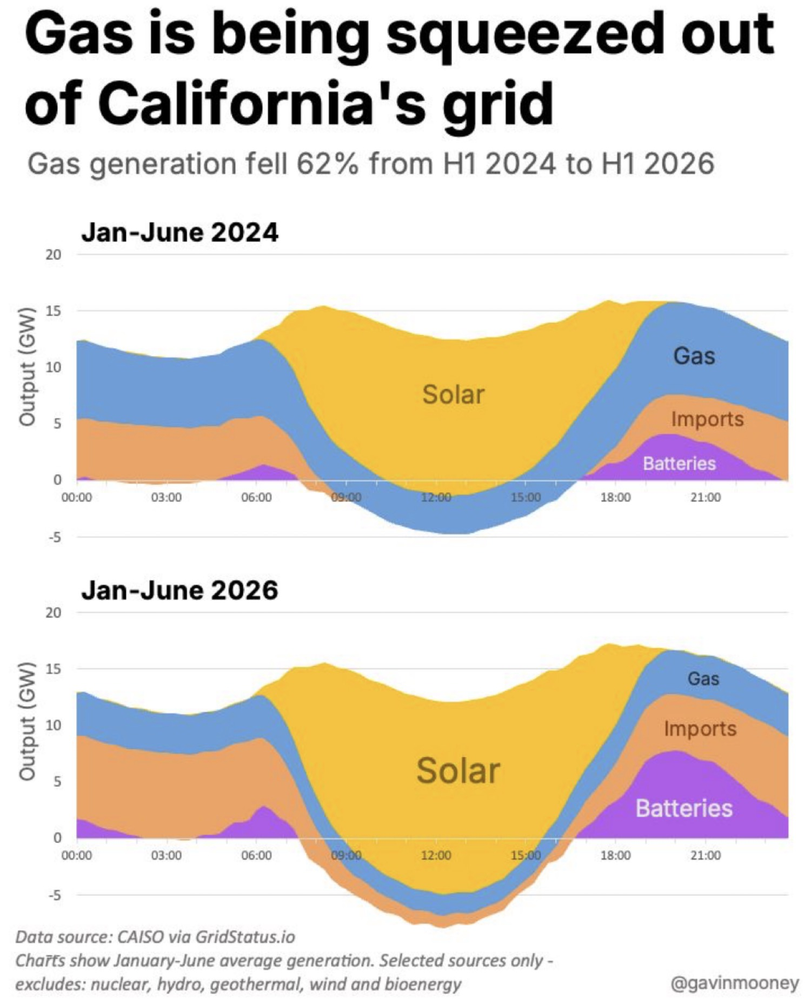
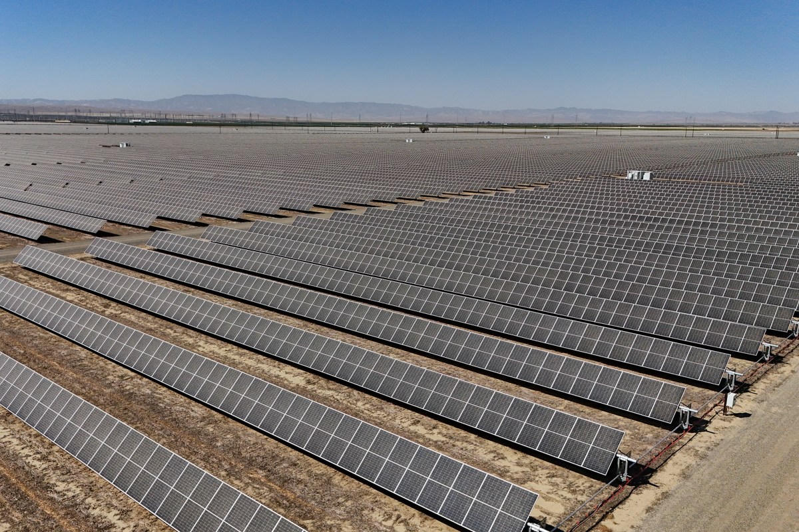
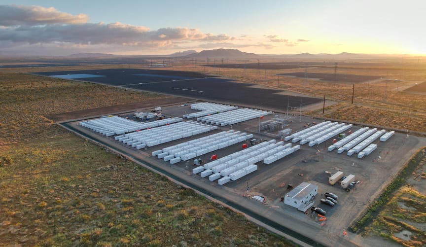
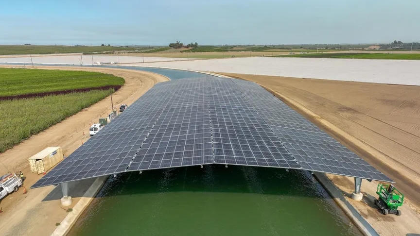
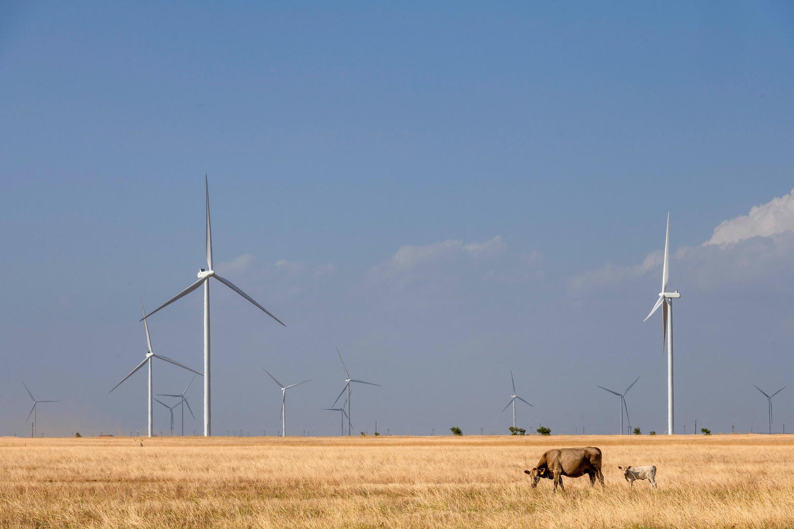
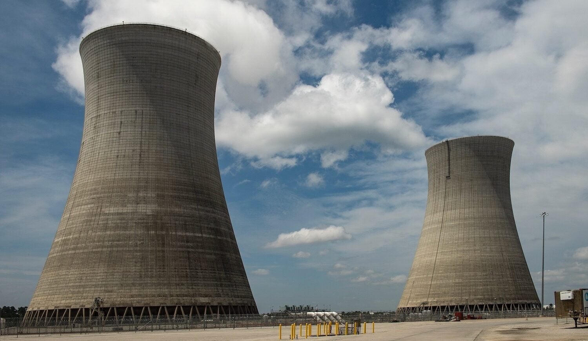
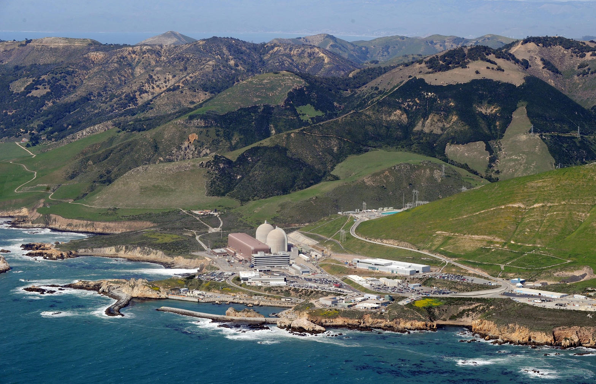
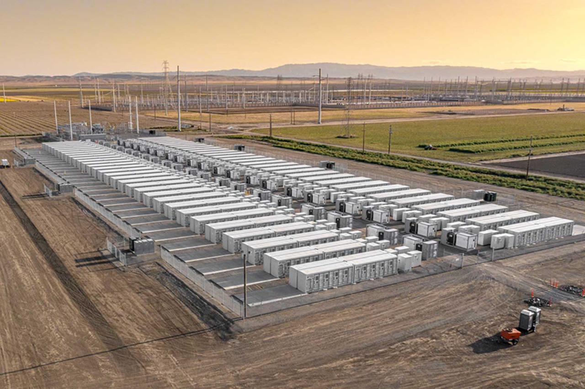

Where the picture came from
The graphic is not a campaign ad and it is not an anonymous meme. It is the work of Gavin Mooney, an energy-transition analyst who has spent years posting CAISO stack charts on LinkedIn and pointing readers to the live CAISO board on GridStatus.io. The underlying numbers match what the U.S. Energy Information Administration published in mid-June 2026 and what IEEFA, Inside Climate News, Utility Dive, and CAISO’s own quarterly reports were already saying in plainer language.
EIA’s version for January through May 2026: utility-scale solar generation in the CAISO footprint rose 21 percent from the same months in 2024. Natural-gas generation fell 60 percent. Solar produced more than gas on 82 percent of those days. Two years earlier that figure was 21 percent. Between April 2024 and April 2026, utility-scale solar capacity in CAISO grew 19 percent to about 25 gigawatts. Battery storage grew 79 percent to about 16 gigawatts. Gas capacity barely moved, still near 29 gigawatts.
That last sentence matters. California did not demolish its gas fleet. It stopped running it as often. Capacity is the insurance policy. Generation is the fuel bill. The chart is about the fuel bill.
How to read the two days
The 2024 panel still looks like the old California afternoon. Gas (blue) holds the shoulders of the day. Solar (yellow) takes the middle. Imports (orange) and a thin purple battery band fill the evening. By 2026 the yellow midday block is a wall. The purple battery band in the evening is fat. Imports are thicker after sunset. Gas is a thinner ribbon on top.
The dip below zero is not a glitch. When the stack goes negative around noon, batteries are charging and the state is often pushing surplus onto neighboring systems. When the stack climbs after 6 p.m., those same batteries discharge and imports come back. That is the duck curve with the belly eaten by storage.
On August 26, 2026, CAISO hit its yearly peak at 5:55 p.m.: 46,015 megawatts. That used to be a gas hour. Analysts who walked the same day with Ed Smeloff for Inside Climate News found batteries covering a share that would have been science fiction in 2021. Separate summer evenings pushed battery discharge near 13 gigawatts. Mark Z. Jacobson’s running tallies put battery output hundreds of percent above 2023 levels and fossil-gas output down on the order of 60 percent against that earlier baseline.

What the chart hides on purpose
Mooney labeled the omission. Nuclear, hydro, geothermal, wind, and bioenergy are off the plot so the squeeze on gas is visible. That is legitimate chartcraft. It is also why a reader can walk away thinking California runs on solar and batteries by noon and almost nothing else.
US Power Gauge’s twelve-month mix through June 2026 is the fuller stack: natural gas 33.2 percent, solar 28.8 percent, hydro 13.3 percent, nuclear 9.3 percent, wind 8.2 percent, other 7.2 percent. Renewables about 58 percent. Carbon-free, if you count nuclear, about 67 percent. Gas is still the single largest source over a full year because winter nights and multi-day storms do not care about a June average.
Imports are the other buried line. EIA found demand up 7 percent over the two-year window, in-state net generation down 19 percent, and imports from nearby systems roughly doubled. Some of that import is cheap clean power. Some of it is whatever the West had for sale that hour, including coal-heavy neighbors. A chart that celebrates the squeeze without naming the import hose is a half-true chart.

The other machine: the bill
Wholesale generation can get cleaner while the retail bill gets worse. That is not a slogan. It is how California’s cost stack is built.
EIA Electric Power Monthly for June 2026 put the U.S. residential average at 18.34 cents per kilowatt-hour. California: 34.74 cents. Hawaii is the only state higher. Texas: 15.94. Iowa: 15.93. South Carolina: 15.55. Nevada: 13.11. Center for Jobs, using the twelve months ended June 2026, had California residential service at 32.88 cents, 93 percent above the rest of the country, with commercial 111 percent above and industrial 160 percent above.
Why, if gas generation collapsed? Because most of a California kilowatt-hour is no longer the fuel. It is wires, wildfire, insurance, undergrounding, legacy generation contracts, and the authorized return of three investor-owned utilities that the California Public Utilities Commission supervises.
The Assembly utility committee’s May 2026 wildfire-cost briefing is the receipt. Approved wildfire-related costs already in rates: about $9.36 billion across PG&E, Edison, and SDG&E. More sitting in the pipeline. The Public Advocates Office put wildfire-related charges at 14 to 19 percent of an average bill, $21 to $41 a month, before counting the next fund the legislature keeps trying to load onto the same meter. PG&E customers also still pay for the Camp Fire bankruptcy architecture and the San Bruno and Aliso Canyon aftershocks. Those costs do not shrink when a battery discharges at 8 p.m.
Mark Jacobson is right that California wholesale prices have often been calm while the rest of the West spiked. He is also right that retail prices are a different ledger. The political habit is to wave the first ledger and ignore the second.

Compare the states that did this differently
Texas built almost everything at once: wind, solar, gas, and a rising battery fleet, on an isolated interconnection that still remembers February 2021. ERCOT set a 91.1 gigawatt daily peak on July 22, 2026. Texas generates more electricity than any other state. Residential rates sit near 16 cents. The bargain is volume and speed. The risk is weatherization, transmission bottlenecks in the far west, and a market that prices scarcity after the fact. Texas is better at adding electrons. It is not a morality play. It is a construction culture.

Iowa is the quiet better model on cost plus clean share. Wind supplied about 64 percent of Iowa’s May 2026 utility-scale generation. Rates stay near the national cheap tier. Rural cooperatives and a flat, windy resource did more than a coastal speech did. Iowa still burns gas and some coal. It did not pretend a four-hour battery is a baseload plant.
South Carolina and Georgia kept nuclear as the spine. South Carolina’s nuclear share in May 2026 was above 50 percent. Plant Vogtle in Georgia is the only new U.S. large reactor pair to finish in a generation, late and over budget, now running. The lesson is not “copy Vogtle’s construction disaster.” The lesson is that firm carbon-free megawatts still do work that solar cannot do at 9 p.m. in January.

Washington still rides hydro. Illinois still rides nuclear. Nevada posted the lowest June 2026 residential rate in the EIA table while running a serious solar build. Those are not identical grids. They share one trait California lost: they did not turn the household meter into the residual dumping ground for every adjacent policy failure.
Worse approaches exist too. New York and much of New England combine high rates, slow interconnection, and political allergy to the firm plants they already have. A Germany-style path, close the nuclear first and discover you still need the molecules, is the warning label on any campaign that treats Diablo as a lifestyle brand instead of a 2-gigawatt machine that runs at night.

Predictions from the 2026 stack
- Gas generation keeps falling on sunny half-years. Through 2028 the H1 charts will look even more yellow and purple. That trend is real and should be stated without sarcasm.
- Gas capacity stays. Plants that run fewer hours are not plants that vanish. Winter storms, wildfire smoke weeks, and multi-day Pacific lulls still need dispatchable heat. Retiring the insurance because the summer chart looks pretty is how you buy a blackout.
- Duration becomes the next argument. Four-hour lithium covers the evening ramp. It does not cover a dark January week. Eight-hour projects in Kern County are the start of that fight, not the end.
- Imports remain a hidden fuel. If the West builds less surplus, California’s doubled import habit gets expensive or dirty. The chart’s orange band is a dependency.
- Rates will not follow gas generation down. Wildfire mitigation, undergrounding, and authorized utility returns dominate the bill. Climate credits on a summer statement are a rebate layered on a structure that is still rising.
- Load growth can reverse the squeeze. Data centers, manufacturing, and electrified heat are the first large new demand California has seen in a decade. Pair them with stranded Valley solar and the economics improve. Ban them and the fixed costs stay on households. Fresno already lives on the wrong side of that choice. See the companion file on the chair and the speech.
- Transmission, not more rooftop slogans, decides whether the Valley harvest reaches a city. Next 10’s 2026 curtailment work put the worst congestion pocket in PG&E’s Fresno Zone. Path 15 is the local version of this statewide story.
The political detour
Call the generation shift a success. It is. Call the retail outcome a success and you are doing public relations.
Corruption here is usually not a suitcase of cash. It is a closed loop. Investor-owned utilities propose. The CPUC authorizes. Wildfire liability that the state designed, inverse condemnation plus a duty to serve through fire country, lands on ratepayers. Elected officials then mail a climate credit and stand in front of a solar field. The same week, a press office can claim the fourth-largest economy runs on two-thirds clean power while a Fresno household compares a 34-cent kilowatt-hour to a Texas cousin at 16.
None of that requires inventing a conspiracy. PG&E’s criminal history after San Bruno and the Camp Fire is on the docket. Edison’s credit-rating fight over wildfire liability is in the business press this month. Refinery exits (Phillips 66 Wilmington, Valero Benicia) are a separate, uglier fuel story that politicians now try to paper over with import deals after years of treating in-state molecules as a moral contaminant. Power-sector solar success does not cancel a gasoline market the state designed into a corner.
The honest political sentence is narrower. California got the physics of midday power roughly right, late and expensive, by flooding the desert and the Valley with panels and then doing the only thing that makes panels useful after 6 p.m.: batteries. It got the institutional design of cost recovery wrong. It treated the household meter as the state’s residual risk pool. That is why the Mooney chart and the EIA rate table can both be true at 9:39 p.m. on a Sunday in September.

Is California on the right track?
On the generation mix, yes, with an asterisk the size of Diablo Canyon. Solar plus batteries is the correct daytime strategy for a sunny coastal empire. Keeping the last large nuclear plant was the adult correction. Adding geothermal and, when the cost curve allows, new firm nuclear would be the next adult move. Pretending the remaining gas fleet is already optional would be the next vanity move.
On long-term household energy needs, no, not yet. A state that leads the continent in residential cents per kilowatt-hour is not winning the affordability contest no matter how beautiful the noon stack looks. Texas and Iowa are not saints. They are cheaper, and cheap power is how industry, refrigeration, and a 105-degree Valley night stay livable.
On politics, the track has a detour every time a chart is used as a substitute for a bill. The right-track version is boring: interconnect the Valley solar that already exists, stop using the meter as a wildfire sinking fund without a hard cap, keep firm carbon-free plants, and let new large load that can run on curtailed midday power onto the system instead of writing ten-year bans. The wrong-track version is the one already in circulation: declare the squeeze complete, take the photo in front of the yellow block, and leave 93728 with the wildfire line item.
The chart is worth circulating. Circulate the rate table next to it. That is the whole file.
Sources
- Gavin Mooney chart, “Gas is being squeezed out of California's grid,” CAISO data via GridStatus.io; live board at gridstatus.io/live/caiso. Mooney’s related CAISO battery and solar posts on LinkedIn, 2025–2026.
- U.S. EIA / Utility Dive, June 16–17, 2026: CAISO Jan–May solar +21%, gas −60%, solar ahead of gas on 82% of days; capacity April 2024–April 2026.
- IEEFA, “California’s gas use for power falls to record low,” June 4, 2026 (May 16 gas share 3.1%; GridStatus source note).
- Inside Climate News / Living on Earth, September 2026: Ed Smeloff interview; Aug. 26, 2026 peak 46,015 MW at 5:55 p.m.; EIA gas-for-power share 10% of U.S. in 2014 to 4% in 2025.
- CAISO 2026 Q1 Report on Market Issues and Performance: gas down in all California hours; battery charge midday, discharge evening; imports up.
- US Power Gauge fuel mix for California, 12 months ending June 2026.
- EIA Electric Power Monthly via CostToRunIt / Price of Electricity / EnergyBot, June 2026 residential rates by state.
- Center for Jobs, California Energy Price Data for August 2026 (12-month rates through June 2026).
- California Assembly Utilities and Energy, Public Advocates Office presentation, May 13, 2026, wildfire-related cost recovery.
- PG&E and CPUC dockets on Diablo Canyon extended operations, 2025–2026; SB 846.
- Gridium, March 2026, “Two Cannibals Are Eating California’s Duck Curve” (wholesale price and curtailment compression).
- Next 10 / Penn researchers, Curtail to Compute, March 10, 2026, cited in the companion High Tower file on the chair.
- Companion local file: stories.ahightower.com/grid-chair.